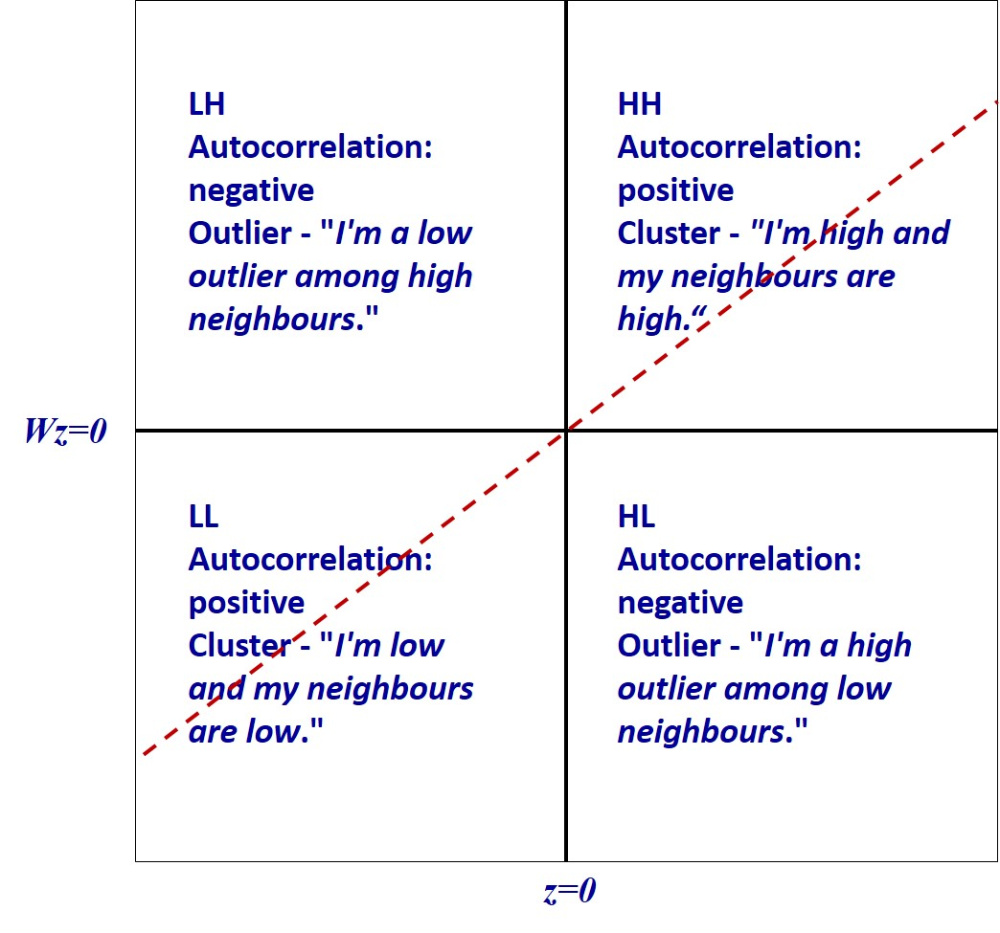
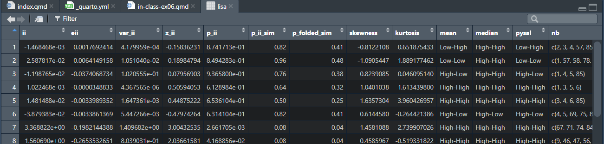
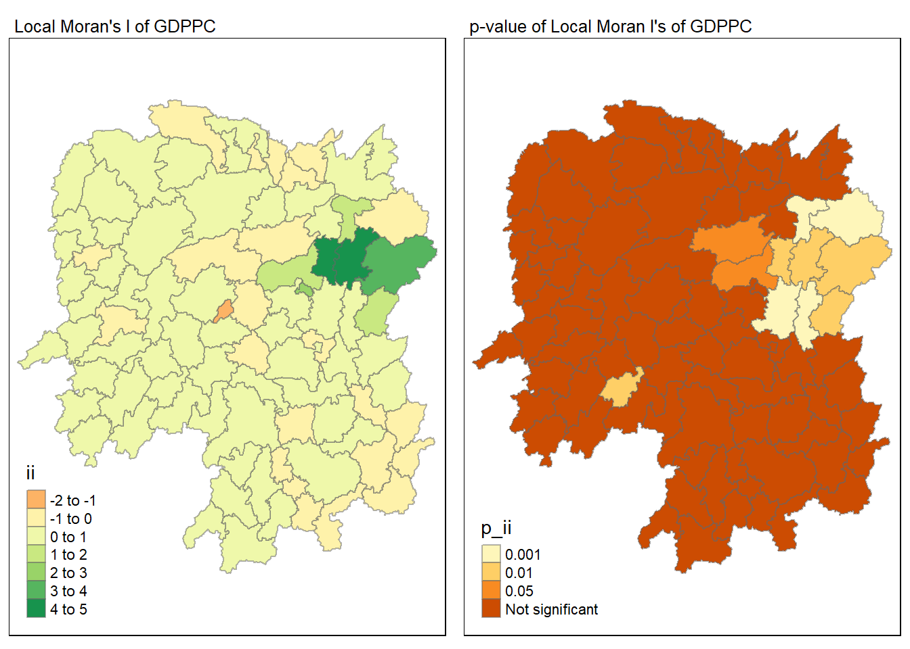
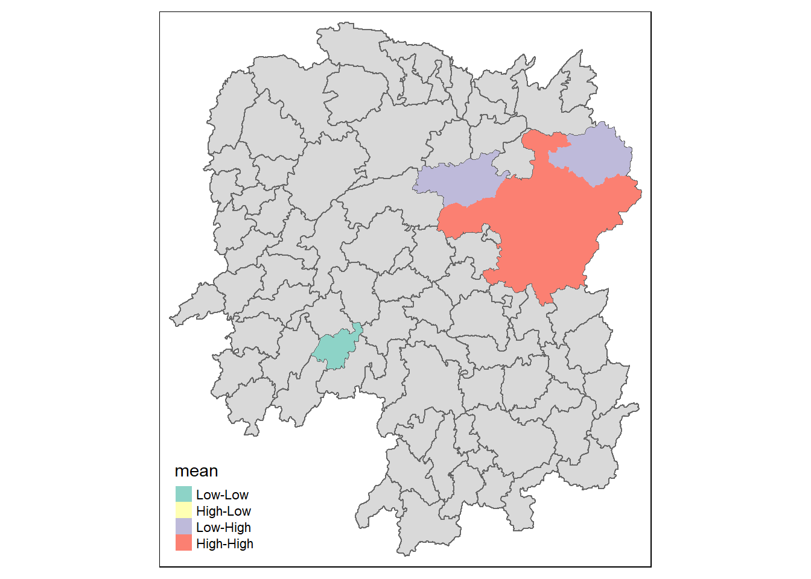

pacman::p_load(sf, sfdep, tmap, tidyverse)06 In-class Exercise (Review)
1 Recap
Local Statistics -> Test for outliers between states and its neighbours?
Tobler’s First Law of Geography -> i.e basically nearer things are more related than further things
In this lesson, we will not touch on Spatial Dependency, we will focus on Spatial Autocorrelation.
Statisticians often use it in time series data – since time series data have a lot of cyclical or seasonal patterns.
Instead of testing for serial stability, in geospatial, we will use autocorrelation for spatial stability. Whether locations are randomly distributed or is it autocorrelated to its neighbours.
Types of Spatial Autocorrelation Interpretation:
– Reject null hypo, can infer that there is spatial autocorrelation when interpreting, know that spatial autocorrelation is continuous, just like your correlation coefficients. e.g. in Positive Spatial Autocorrelation, we likely see a range of values from 0 to 1 (clustering is strong when nearer to 1.)
– When you have more negative spatial autocorrelation, we are likely to see more outliers, that is the checkboard patterns.
Brief history: 1950s to 1960s –> ‘quantitative geography revolution’ Using quantitative methods to measure geographical phenomena.
Confidence Interval:

When we reject the null hypothesis, we can only infer that spatial points are not randomly distributed, we cannot say for sure, or determine that it is really not spatially randomly distributed.
Getis-Ord Global G:
d has to be distance matrix, cannot use proximity matrix.
The function only tells us whether there are signs of positive or negative clusters –> high-high (high value with high value neighbours) clusters and low-low (low value with low value neighbours) clusters.
Meanwhile, there are signs of outliers –> high-low, and low-high, which means high value surrounded by low value neighbours and vice versa.

The function only accepts only positive variables, since we are multiplying variables together.
Local Indicator of Spatial Association (LISA)
- Break Moran’s I into local to come up with LISA
- the LISA for each observation gives an indication of the extent of significant spatial clustering of similar values around that observation
2 In-class Exercise
Note
We are going to use a different package, and therefore different method, of computing the Spatial Autocorrelation in this exercise. (Compared to Hands-on Exercise 6)
In your Takehome Exercise 2, you have to use sfdep, a wrapper of spdep, which is based on sf and uses tibble DataFrames, which makes working with the data a lot easier.
hunan_2012 <- read_csv("data/aspatial/Hunan_2012.csv")
hunan_sf <- st_read("data/geospatial/", layer = "Hunan")Reading layer `Hunan' from data source
`C:\hengkuanxin\SMU_Geospatial_Analytics\in-class-exercise\ex06\data\geospatial'
using driver `ESRI Shapefile'
Simple feature collection with 88 features and 7 fields
Geometry type: POLYGON
Dimension: XY
Bounding box: xmin: 108.7831 ymin: 24.6342 xmax: 114.2544 ymax: 30.12812
Geodetic CRS: WGS 84hunan_GDPPC <- left_join(hunan_sf, hunan_2012) %>% select(1:4, 7, 15)Tips and Tricks:
When using mutate, include argument .before = i, to insert the new attributes before column i. This makes the tibble DataFrame easier to read when we open the table.
wm_q <- hunan_GDPPC %>%
mutate( nb = st_contiguity(geometry), # calculate contiguity neighbours as new column called nb
wt = st_weights(nb, # calculate weights as new column called wt
style = "W"), # row standardised weights
.before = 1) # .before makes mutate insert new columns at the front!2.1 Computing Global Moran’s I [Optional]
global_moran() function is used to compute the Moran’s I value.
Different from spdep package, the output is a tibble data.frame.
moranI <- global_moran(wm_q$GDPPC,
wm_q$nb,
wm_q$wt)
glimpse(moranI)List of 2
$ I: num 0.301
$ K: num 7.64I refers to Moran’s I value.
K refers to the average number of neighbours found.
2.2 Performing Global Moran’s I Test [Base Moran I, no Simulation]
global_moran_test(wm_q$GDPPC,
wm_q$nb,
wm_q$wt)
Moran I test under randomisation
data: x
weights: listw
Moran I statistic standard deviate = 4.7351, p-value = 1.095e-06
alternative hypothesis: greater
sample estimates:
Moran I statistic Expectation Variance
0.300749970 -0.011494253 0.004348351 Check the p-value first!
The p-value is smaller than the alpha value if confidence level = 95%. We are therefore able to reject the null hypothesis and we can say that we have enough statistical evidence such that we are 95% confident that clustering is present.
Then interpret the Moran I statistics
I is positive, there are signs of clustering.
2.3 Performing Global Moran’s I Permutation Test (Repeatedly Test) [Use Simulations]
In the real world, in fact you do not need to perform the previous tests. You can just start with the permutation test.
What if the Global Moran’s I test, under randomisation,
Usually, just a hundred iterations is enough. Note that iterations start from 0. You can also use 999 if need be.
set.seed(1234)
global_moran_perm(wm_q$GDPPC,
wm_q$nb,
wm_q$wt,
nsim = 99)
Monte-Carlo simulation of Moran I
data: x
weights: listw
number of simulations + 1: 100
statistic = 0.30075, observed rank = 100, p-value < 2.2e-16
alternative hypothesis: two.sidedlisa <- wm_q %>%
mutate(local_moran = local_moran(GDPPC,
nb,
wt,
nsim = 99),
.before = 1) %>%
unnest(local_moran)
Describing the columns:
- ii: refers to your local Moran I
- p_ii: p value, using base method
- p_ii_sim: p value, using the simulation method –> hundred simulations without replacement
- p_folded_sim: p value, is called the pysal method, which uses K fold validation.
- mean: label the clusters
- (if normal distribution, mean is useful)
- median: label the clusters
- (if distribution is skewed, median is more useful) REFER TO skewness!
tmap_mode("plot")
m1 <- tm_shape(lisa) +
tm_fill( "ii")+
tm_borders(alpha = 0.5)+
tm_view(set.zoom.limits = c(6,8))+
tm_layout(
main.title = "Local Moran's I of GDPPC",
main.title.size = 0.8
)
m2 <- tm_shape(lisa) +
tm_fill( "p_ii",
breaks = c(0,0.001,0.01,0.05,1),
labels = c("0.001","0.01","0.05","Not significant"))+
tm_borders(alpha = 0.5)+
tm_view(set.zoom.limits = c(6,8))+
tm_layout(
main.title = "p-value of Local Moran I's of GDPPC",
main.title.size = 0.8
)
tmap_arrange(m1,m2)
lisa_sig <- lisa %>%
filter(p_ii < 0.05)
tmap_mode("plot")
tm_shape(lisa) +
tm_polygons() +
tm_borders(alpha = 0.5) +
tm_shape(lisa_sig) +
tm_fill("mean") +
tm_borders(alpha = 0.)
LISA map is a categorical map showing outliers and clusters. There are two types of outliers, namely: High-Low and Low-High outliers. Likewise, there are two types of clusters namely: High_High and Low-Low clusters. In fact, LISA map is an interpreted map by combining local Moran’s I of geographical areas and their respective p-values.
Context is very important. Note that in your Take-home Exercise, you are looking at Clusters of Drug Usage.
2.4 Computing Local Gi* statistics
As usual, we will need to derive a spatial weight matrix before we can compute local Gi* statistics, Code chunk below will be used to derive a spatial weight matrix by using sfdep functions and tidyverse approach.
You will also need to include
wm_idw <- hunan_GDPPC %>%
mutate( nb = st_contiguity(geometry),
wt = st_inverse_distance(nb, geometry,
scale = 1,
alpha = 1),
.before = 1)HCSA <- wm_idw %>%
mutate( local_Gi = local_gstar_perm(GDPPC, nb, wt, nsim = 99),
.before = 1) %>%
unnest(local_Gi)
HCSASimple feature collection with 88 features and 18 fields
Geometry type: POLYGON
Dimension: XY
Bounding box: xmin: 108.7831 ymin: 24.6342 xmax: 114.2544 ymax: 30.12812
Geodetic CRS: WGS 84
# A tibble: 88 × 19
gi_star cluster e_gi var_gi std_dev p_value p_sim p_folded_sim skewness
<dbl> <fct> <dbl> <dbl> <dbl> <dbl> <dbl> <dbl> <dbl>
1 0.0416 Low 0.0114 0.00000641 0.0493 9.61e-1 0.7 0.35 0.875
2 -0.333 Low 0.0106 0.00000384 -0.0941 9.25e-1 1 0.5 0.661
3 0.281 High 0.0126 0.00000751 -0.151 8.80e-1 0.9 0.45 0.640
4 0.411 High 0.0118 0.00000922 0.264 7.92e-1 0.6 0.3 0.853
5 0.387 High 0.0115 0.00000956 0.339 7.34e-1 0.62 0.31 1.07
6 -0.368 High 0.0118 0.00000591 -0.583 5.60e-1 0.72 0.36 0.594
7 3.56 High 0.0151 0.00000731 2.61 9.01e-3 0.06 0.03 1.09
8 2.52 High 0.0136 0.00000614 1.49 1.35e-1 0.2 0.1 1.12
9 4.56 High 0.0144 0.00000584 3.53 4.17e-4 0.04 0.02 1.23
10 1.16 Low 0.0104 0.00000370 1.82 6.86e-2 0.12 0.06 0.416
# ℹ 78 more rows
# ℹ 10 more variables: kurtosis <dbl>, nb <nb>, wt <list>, NAME_2 <chr>,
# ID_3 <int>, NAME_3 <chr>, ENGTYPE_3 <chr>, County <chr>, GDPPC <dbl>,
# geometry <POLYGON [°]>